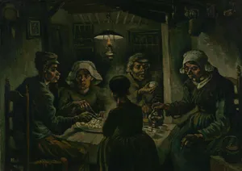
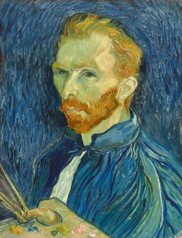

Vincent Willem van Gogh
Vincent Willem van Gogh (30 March 1853 – 29 July 1890) was a Dutch Post-Impressionist painter who is among the most famous and influential figures in the history of Western art. In just over a decade, he created approximately 2,100 artworks, including around 860 oil paintings, most of them in the last two years of his life. His oeuvre includes landscapes, still lifes, portraits, and self-portraits, most of which are characterised by bold colours and dramatic brushwork that contributed to the rise of expressionism in modern art. Van Gogh's work was only beginning to gain critical attention before he died from a self-inflicted gunshot at age 37. During his lifetime, only one of Van Gogh's paintings, The Red Vineyard, was sold.
Early years
Vincent Willem van Gogh was born on 30 March 1853 in Groot-Zundert, in the predominantly Catholic province of North Brabant in the Netherlands. He was the oldest surviving child of Theodorus van Gogh (1822–1885), a minister of the Dutch Reformed Church, and his wife, Anna Cornelia Carbentus (1819–1907). Van Gogh was given the name of his grandfather and of a brother stillborn exactly a year before his birth. His grandfather, Vincent (1789–1874), was a prominent art dealer and a theology graduate from the University of Leiden in 1811. This Vincent had six sons, three of whom became art dealers, and may have been named after his great-uncle, a sculptor (1729–1802).
Gogh's mother came from a prosperous family in The Hague. His father was the youngest son of a minister. The two met when Anna's younger sister, Cornelia, married Theodorus's older brother Vincent (Cent). Van Gogh's parents married in May 1851 and moved to Zundert. His brother Theo was born on 1 May 1857. There was another brother, Cor, and three sisters: Elisabeth, Anna, and Willemina (known as "Wil"). In later life, Van Gogh remained in touch only with Willemina and Theo. Theodorus's salary as a minister was modest, but the Church also supplied the family with a house, a maid, two cooks, a gardener, a carriage and horse; his mother Anna instilled in the children a duty to uphold the family's high social position.
Van Gogh was a serious and thoughtful child. He was taught at home by his mother and a governess, and in 1860, was sent to the village school. In 1864, he was placed in a boarding school at Zevenbergen, where he felt abandoned, and he campaigned to come home. Instead, in 1866, his parents sent him to the middle school in Tilburg, where he was also deeply unhappy. His interest in art began at a young age. He was encouraged to draw as a child by his mother, and his early drawings are expressive, but do not approach the intensity of his later work. Constant Cornelis Huijsmans, who had been a successful artist in Paris, taught the students at Tilburg. His philosophy was to reject technique in favour of capturing the impressions of things, particularly nature or common objects. Van Gogh's profound unhappiness seems to have overshadowed the lessons, which had little effect. In March 1868, he abruptly returned home. He later wrote that his youth was "austere and cold, and sterile".
In July 1869, Van Gogh's uncle Cent obtained a position for him at the art dealers Goupil & Cie in The Hague. After completing his training in 1873, he was transferred to Goupil's London branch on Southampton Street, and took lodgings at 87 Hackford Road, Stockwell. This was a happy time for Van Gogh; he was successful at work and, at 20, was earning more than his father. Theo's wife, Jo van Gogh-Bonger, later remarked that this was the best year of Vincent's life. He became infatuated with his landlady's daughter, Eugénie Loyer, but she rejected him after he confessed his feelings; she was secretly engaged to a former lodger. He grew more isolated and religiously fervent. His father and uncle arranged a transfer to Paris in 1875, where he became resentful of issues such as the degree to which the art dealers commodified art, and he was dismissed a year later.
In April 1876, he returned to England to take unpaid work as a supply teacher in a small boarding school in Ramsgate. When the proprietor moved to Isleworth in Middlesex, Van Gogh went with him. The arrangement was not successful; he left to become a Methodist minister's assistant. His parents had meanwhile moved to Etten; in 1876 he returned home at Christmas for six months and took work at a bookshop in Dordrecht. He was unhappy in the position, and spent his time doodling or translating passages from the Bible into English, French, and German. He immersed himself in Christianity and became increasingly pious and monastic. According to his flatmate of the time, Paulus van Görlitz, Van Gogh ate frugally, avoiding meat.
To support his religious conviction and his desire to become a pastor, in 1877, the family sent him to live with his uncle Johannes Stricker, a respected theologian, in Amsterdam. Van Gogh prepared for the University of Amsterdam theology entrance examination; he failed the exam and left his uncle's house in July 1878. He undertook, but also failed, a three-month course at a Protestant missionary school in Laken, near Brussels.
In January 1879, he took up a post as a missionary at Petit-Wasmes in the working class, coal-mining district of Borinage in Belgium. To show support for his impoverished congregation, he gave up his comfortable lodgings at a bakery to a homeless person and moved to a small hut, where he slept on straw. His humble living conditions did not endear him to church authorities, who dismissed him for "undermining the dignity of the priesthood". He then walked the 75 kilometres (47 mi) to Brussels, returned briefly to Cuesmes in the Borinage, but he gave in to pressure from his parents to return home to Etten. He stayed there until around March 1880, which caused concern and frustration for his parents. His father was especially frustrated and advised that his son be committed to the lunatic asylum in Geel.
Van Gogh returned to Cuesmes in August 1880, where he lodged with a miner until October. He became interested in the people and scenes around him, and he recorded them in drawings after Theo's suggestion that he take up art in earnest. He travelled to Brussels later in the year, to follow Theo's recommendation that he study with the Dutch artist Willem Roelofs, who persuaded him – in spite of his dislike of formal schools of art – to attend the Académie Royale des Beaux-Arts. He registered at the Académie in November 1880, where he studied anatomy and the standard rules of modelling and perspective.
Βιογραφία - Καριέρα
His artistic career was extremely short, lasting only the 10 years from 1880 to 1890. During the first four years of this period, while acquiring technical proficiency, he confined himself almost entirely to drawings and watercolors. First, he went to study drawing at the Brussels Academy; in 1881 he moved to his father’s parsonage at Etten, Netherlands, and began to work from nature.
Van Gogh worked hard and methodically but soon perceived the difficulty of self-training and the need to seek the guidance of more experienced artists. Late in 1881 he settled at The Hague to work with a Dutch landscape painter, Anton Mauve. He visited museums and met with other painters. Van Gogh thus extended his technical knowledge and experimented with oil paint in the summer of 1882. In 1883 the urge to be “alone with nature” and with peasants took him to Drenthe, an isolated part of the northern Netherlands frequented by Mauve and other Dutch artists, where he spent three months before returning home, which was then at Nuenen, another village in the Brabant. He remained at Nuenen during most of 1884 and 1885, and during these years his art grew bolder and more assured. He painted three types of subjects—still life, landscape, and figure—all interrelated by their reference to the daily life of peasants, to the hardships they endured, and to the countryside they cultivated. Émile Zola’s Germinal (1885), a novel about the coal-mining region of France, greatly impressed van Gogh, and sociological criticism is implicit in many of his pictures from this period—e.g., Weavers and The Potato Eaters. Eventually, however, he felt too isolated in Nuenen.
His understanding of the possibilities of painting was evolving rapidly; from studying Hals he learned to portray the freshness of a visual impression, while the works of Paolo Veronese and Eugène Delacroix taught him that color can express something by itself. This led to his enthusiasm for Peter Paul Rubens and inspired his sudden departure for Antwerp, Belgium, where the greatest number of Rubens’s works could be seen. The revelation of Rubens’s mode of direct notation and of his ability to express a mood by a combination of colors proved decisive in the development of van Gogh’s style. Simultaneously, van Gogh discovered Japanese prints and Impressionist painting. All these sources influenced him more than the academic principles taught at the Antwerp Academy, where he was enrolled. His refusal to follow the academy’s dictates led to disputes, and after three months he left precipitately in 1886 to join Theo in Paris. There, still concerned with improving his drawing, van Gogh met Henri de Toulouse-Lautrec, Paul Gauguin, and others who were to play historic roles in modern art. They opened his eyes to the latest developments in French painting. At the same time, Theo introduced him to Camille Pissarro, Georges Seurat, and other artists of the Impressionist group.
Βιογραφία - Παρακαταθήκη
Largely on the basis of the works of the last three years of his life, van Gogh is generally considered one of the greatest Dutch painters of all time. His work exerted a powerful influence on the development of much modern painting, in particular on the works of the Fauve painters, Chaim Soutine, and the German Expressionists. Yet of the more than 800 oil paintings and 700 drawings that constitute his life’s work, he sold only one in his lifetime. Always desperately poor, he was sustained by his faith in the urgency of what he had to communicate and by the generosity of Theo, who believed in him implicitly. The letters that he wrote to Theo from 1872 onward, and to other friends, give such a vivid account of his aims and beliefs, his hopes and disappointments, and his fluctuating physical and mental state that they form a unique and touching biographical record that is also a great human document.
The name of van Gogh was virtually unknown when he killed himself: only one article about him had appeared during his lifetime. He had exhibited a few canvases at the Salon des Indépendants in Paris between 1888 and 1890 and in Brussels in 1890; both salons showed small commemorative groups of his work in 1891. One-man shows of his work did not occur until 1892.
Van Gogh’s fame dates from the early years of the 20th century, and since then his reputation has never ceased to grow. A large part of this reputation is based on the image of van Gogh as a struggling genius, working unappreciated in isolation. The dramatic elements of his life—poverty, self-mutilation, mental breakdown, and suicide—feed the drama of this mythology. The notion that his unorthodox talent was unrecognized and rejected by society heightens the legend, as it is just that sort of isolation and struggle that has come to define the modern concept of the artist. This mythical van Gogh has become almost inseparable from his art, inspiring artists to dramatize his saga in poems, novels, films, operas, dance ensembles, orchestral compositions, and a popular song. Wide and diverse audiences have come to appreciate his art, and the record-breaking attendance at exhibitions of his works—as well as the popularity of commercial items featuring imagery from his oeuvre—reveal that, within the span of a century, van Gogh has become perhaps the most recognized painter of all time. The unprecedented prices his works have attained through auction and the attention paid to forgery scandals have only increased van Gogh’s stature in the public imagination.
Because the most sensational events of van Gogh’s life—the conflicts with Gauguin, the mutilation of his left ear, and the suicide—are thinly documented and layered with apocrypha and anecdote, there is a trend in van Gogh studies to penetrate the layers of myth by reconstructing the known facts of the artist’s life. This scholarly analysis has taken many forms. Medical and psychological experts have examined contemporary descriptions of his symptoms and their prescribed treatments in an attempt to diagnose van Gogh’s condition (theories suggest epilepsy, schizophrenia, or both). Other scholars have studied evidence of his interaction with colleagues, neighbors, and relatives and have meticulously examined the sites where van Gogh worked and the locales where he lived. In light of van Gogh’s continually increasing popularity, scholars have even deconstructed the mythologizing process itself. These investigations shed greater light on the artist and his art and also offer further proof that, more than a century after his death, van Gogh’s extraordinary appeal continues to endure and expand.
Paintings - Sunflowers
Sunflower Paintings
Sunflowers

The Painter of Sunflowers

Vase with five sunflowers

Vase with Three Sunflowers

Vase with Twelve Sunflowers
Paintings - Portraits
Some of the portraits
Bandage

Camile Roulin

Doctor Ray

Eugène Boch

Gray Hat

L'Arlésienne
.jpg) La Berceuse (Augustine Roulin)
La Berceuse (Augustine Roulin)
Pipe

Portrait of Joseph Roulin

Postman Joseph Roulin

Self-Portrait with Bandaged Ear and Pipe

Self-Portrait
Self-Portrait

The Gardener

Theo van Gogh

Young Woman at the table
Paintings - landscapes
Some of the landscape paintings

Peach tree in blossom

The Pink Peach Tree

Houses at Auvers

Irises

Landscape with Snow

Olive Trees
.jpg)
Orchard in Blossom (Plum Trees)

Road Along the Seine near Asnieres

Starry Night Over the Rhône

The harvest

The Olive Trees

The Red Vineyard
The Red Vineyard

The Starry Night

Tree Roots

Wheat Field with Cypresses

Wheatfield with Crows
Past Exhibitions
| Exhibition name | Date | Location |
|---|
Current Exhibitions
| Exhibition name | Date | Location |
|---|
Upcoming Exhibitions
| Exhibition name | Date | Location |
|---|
Σύνδεσμοι - Ιστοσελίδες
| Website name | Link | Description |
|---|
Σύνδεσμοι - Ιστοσελίδες
| Website name | Link | Description |
|---|